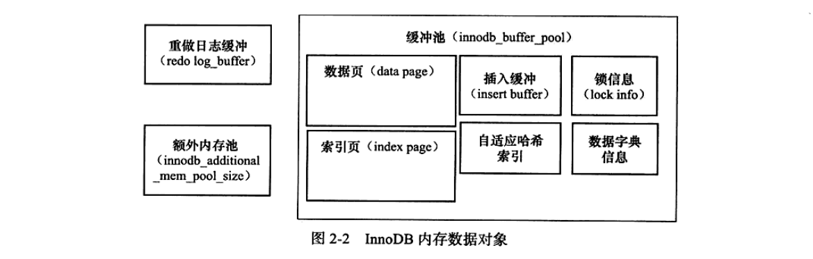

RDBMS: mysql innodb engines
这是关于《 MySQL技术内幕：InnoDB存储引擎》吐槽的一篇文章，通览全书，发现以下特点：1.知识零散，毫无关联；2.只讲源码，脱离生产；3.毫无目的，为了装逼而装逼
1. 什么是innodb引擎？
mysql区别于其他数据库的一个特点就是其插件式的表存储引擎。mysql插件式的存储引擎架构提供了一系列标准的服务，这些标准服务与存储引擎本身无关，是数据库系统本身需要的，如sql分析器和优化器等，而存储引擎是底层物理结构的实现。
2. innodb引擎支持什么？
支持ACID事务 + 行锁 + BTree索引 + hash索引 + 内存优化等。
3. innodb引擎缓冲池是什么？

如上图所示，主要缓存数据页和索引页
1. 数据页：使用LRU算法缓存一部分热点数据
2. 索引页：缓存索引页，当插入辅助索引（非唯一索引）时，先插入到insert buff中，如果索引页在索引缓存中，直接插入，如果不在，构架一颗BTree再插入，然后再刷新回磁盘。
3. 自适应哈希索引：同一条件查询+同一数据+>100次后，innodb引擎会为这份数据建立自适应哈希索引。
将项目导入intellij idea，可以看到版本控制信息。

git diff 比较工作区和暂存区的差别